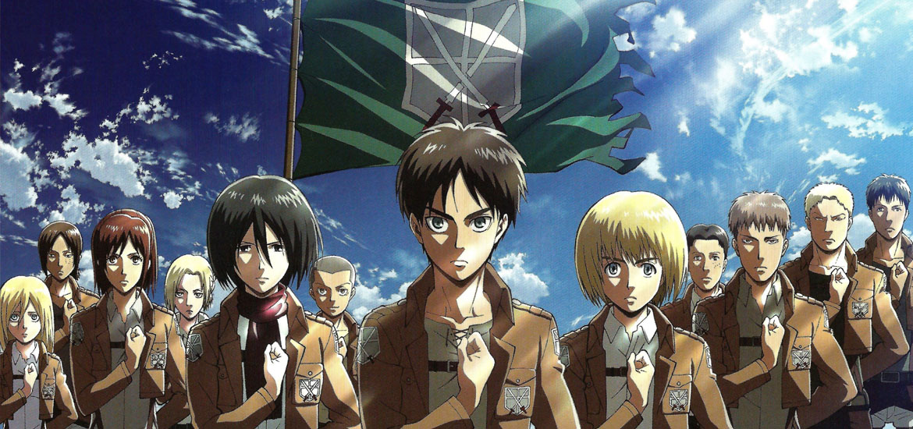

Plus de cent ans avant le début de l’histoire, des créatures géantes humanoïdes nommées Titans sont subitement apparues et ont presque anéanti l’humanité. Ces créatures géantes font habituellement entre trois et quinze mètres de haut, avec quelques exceptions comme le Titan colossal qui en mesure 64. Il semblerait que les Titans dévorent les humains par instinct et uniquement pour les tuer : en effet, ils ne possèdent pas de système digestif et n’ont pas besoin de se nourrir, puisant leur énergie dans la lumière du soleil. Ils ont la peau dure, des capacités régénératrices et ne peuvent être tués que par une incision profonde à la base de la nuque.
Pour se protéger, l’humanité vit entourée par un système de trois murs concentriques de cinquante mètres de haut, distants les uns des autres d’une centaine de kilomètres. Le mur extérieur est le Mur Maria, l’intermédiaire est le Mur Rose et le central est le Mur Sina.
La lutte contre les Titans est organisée autour d’une armée répartie en trois branches. Le bataillon d’exploration effectue des expéditions de reconquête de territoire à l’extérieur des murs, là où se trouvent les Titans. La garnison s’occupe de la protection des murs et des habitants des villes. Enfin, les brigades spéciales opèrent sous l’autorité royale dans des conditions de vie prospères et doivent maintenir la paix à l'intérieur des murs. Seules les dix premières recrues de chaque brigade d'entraînement reçoivent le privilège de demander une affectation au sein des brigades spéciales. Afin d’accéder au point faible des Titans, les soldats utilisent des lames et les équipements de manœuvres tridimensionnelles, leur permettant de se déplacer rapidement dans un espace à trois dimensions.
Source 